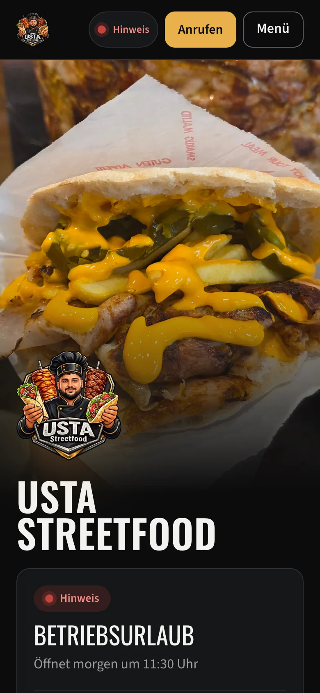
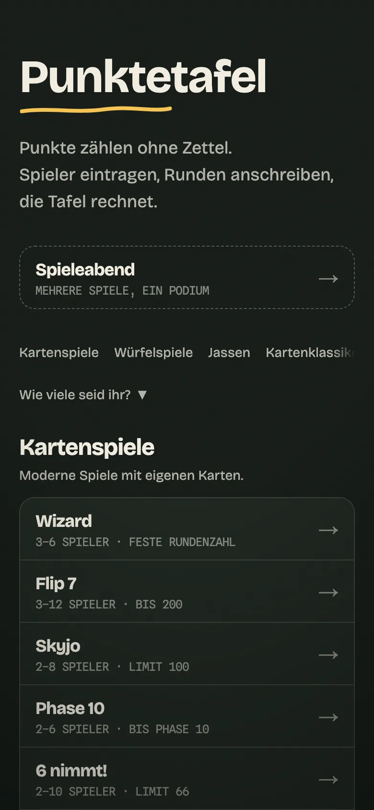
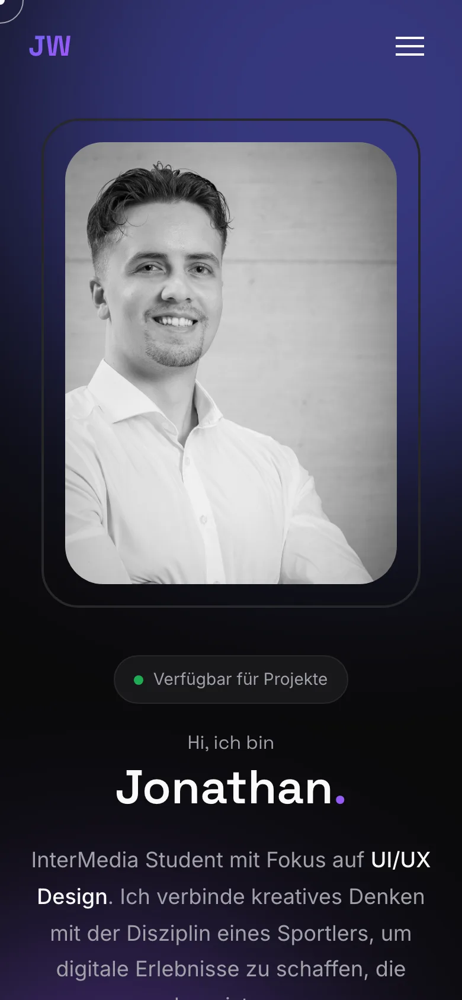

Ich baue Websites und Web‑Apps für Leute und Betriebe in Vorarlberg.
[TEXT LUCA] Ein Satz: wer du bist, wo, wie du arbeitest.

Kursbuchung für einen Calisthenics‑Coach, Bludenz

Website mit Mini‑CMS für einen Foodtruck, Nenzing

Eigene Web‑App: Punkte zählen am Spieltisch

Portfolio für einen InterMedia‑Studenten, FH Vorarlberg
[TEXT LUCA] Ein Satz, der zur Anfrage führt.
[TEXT LUCA] Zwei, drei Sätze über dich: Bludenz, der Job bei Ball, warum du Websites baust.